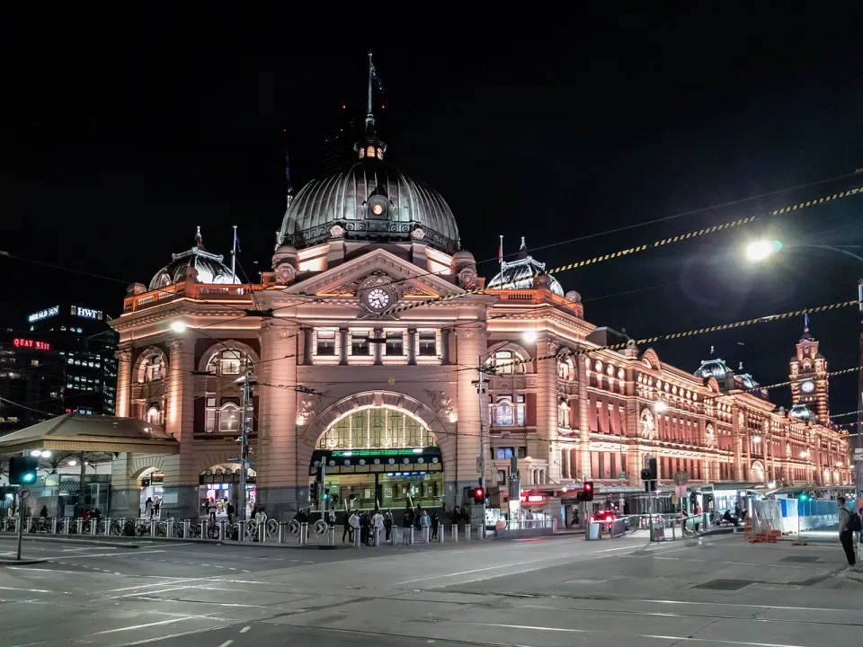
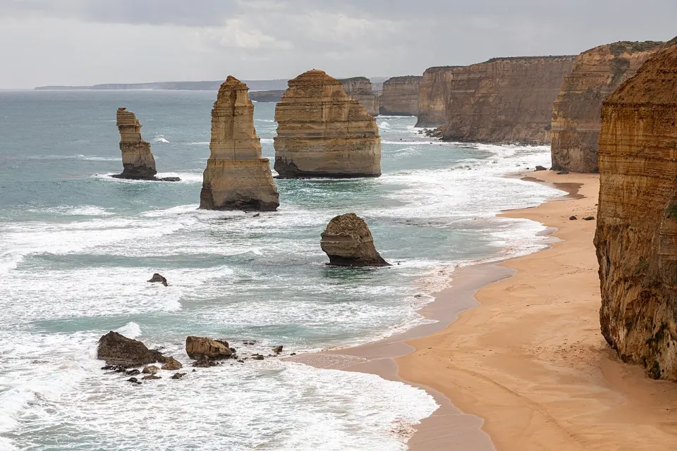
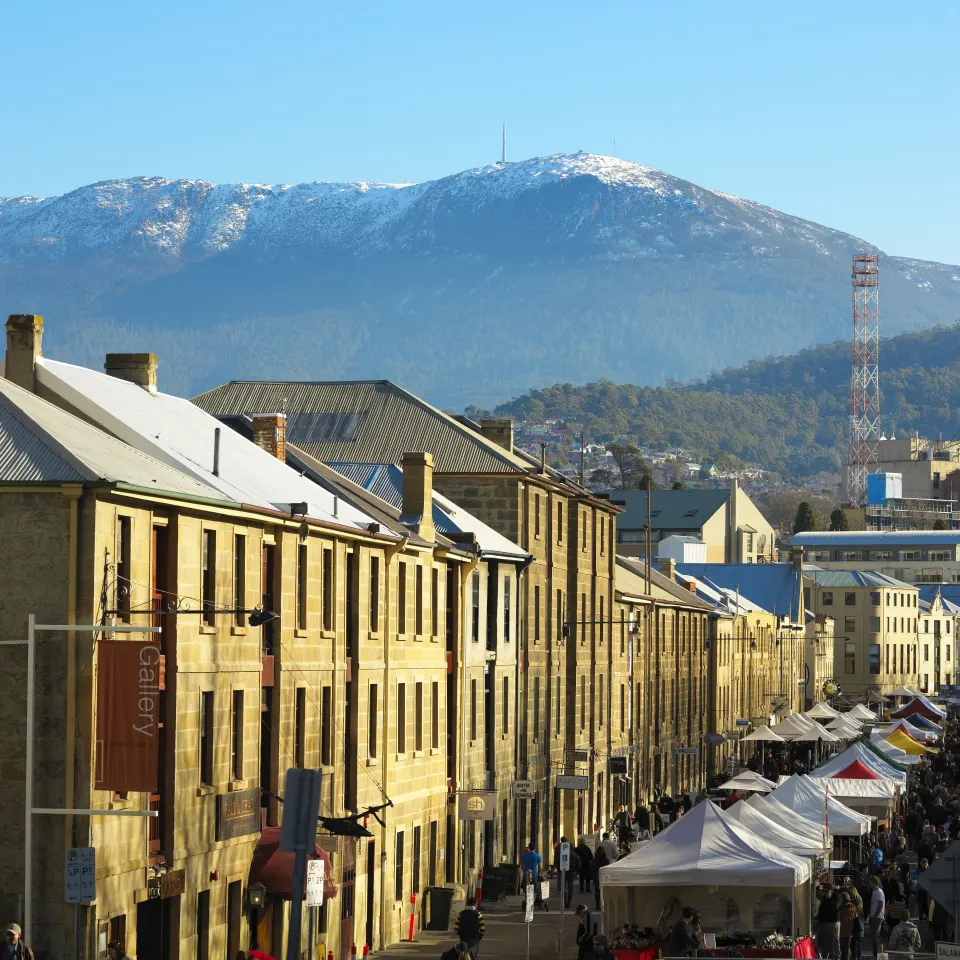
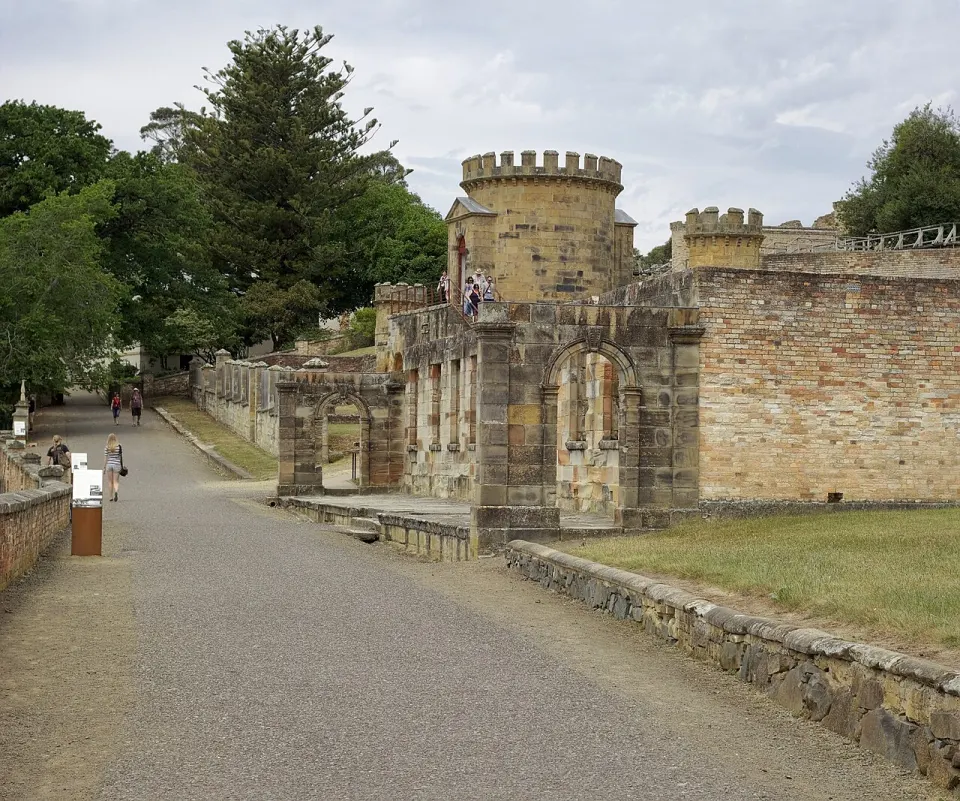
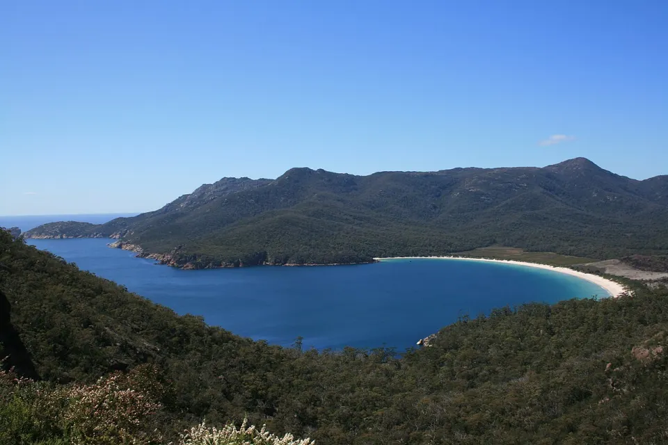
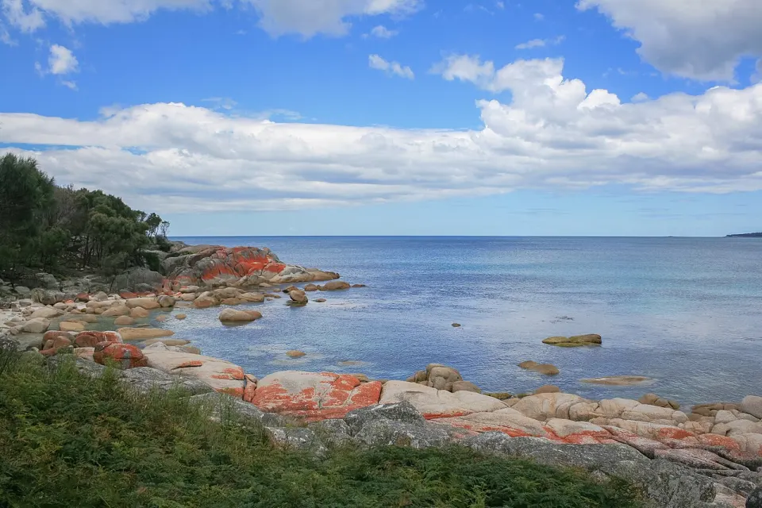
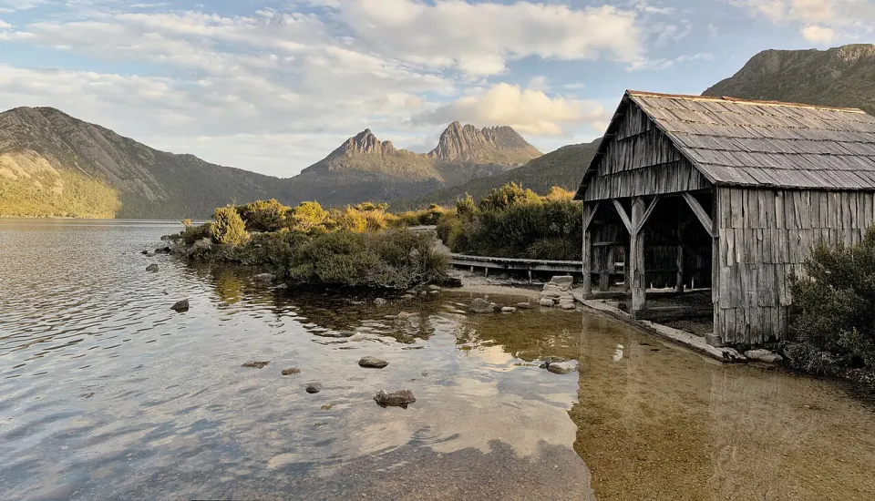
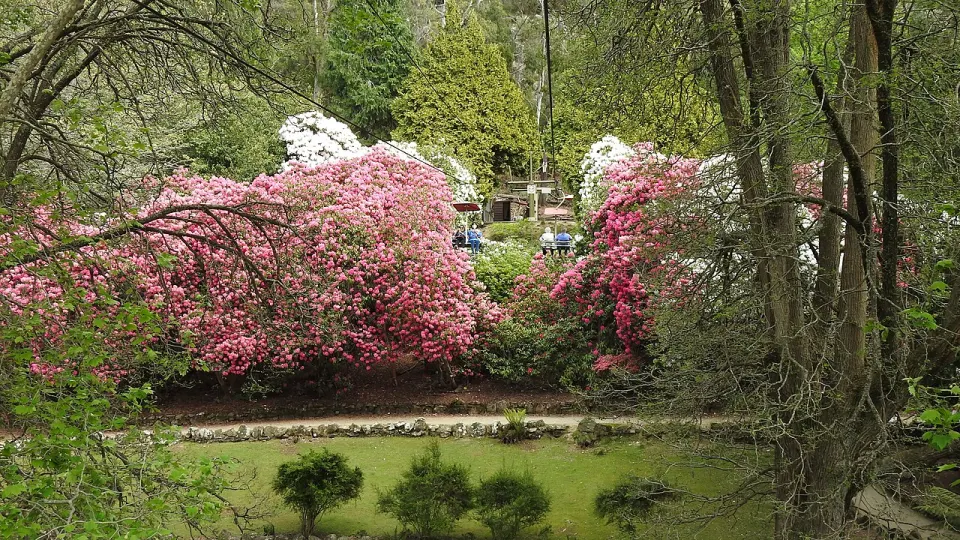

Plan A｜1 月下旬出发
2027/1/19-2/2 左右，15 天。
春节前回到新加坡。节奏稍紧，但可以避开春节返程周期。
两个人一起出发，Tasmania 改为全程自驾。住进海边与山间民宿，沿 Great Eastern Drive 慢慢停靠，也给自己做饭留出舒服的晚上。
两人可以轮换驾驶，推荐 Hobart 机场取车、Launceston 机场还车；多出的一天留给 Freycinet 或 Cradle Mountain 看天气调整。
如果总交通成本没有明显高于 Plan A，当前更建议选 Plan B。
2027/1/19-2/2 左右，15 天。
春节前回到新加坡。节奏稍紧，但可以避开春节返程周期。
2027/2/16-3/2 或 2/17-3/3，16 天。
澳洲暑假基本结束，春节核心出行段已过，Freycinet 多留一天用于天气调整。
票价和天气只作为规划依据，订票前需要重新查 SIN-MEL、MEL-HBA、LST-MEL 三段。
Hobart 机场取车、Launceston 机场还车，车辆贯穿整个塔州段。每天尽量控制在 1-3 小时驾驶，景点日不赶夜路。
HBA 落地直接取小型自动挡，LST 起飞前还车；两位驾驶人都加入租车合同。
每天出发前确定主驾与替补，约 90 分钟交换一次。尽量 17:30 前抵达住宿，黄昏后减少驾驶。
Cradle Mountain 开车到 Visitor Centre 后换官方 shuttle，运营时段内不能自驾进入 Dove Lake Road。
山路与海岸公路不追赶导航时间；下载离线地图，油量低于半箱就在大镇补给。
按路线顺序浏览。手机上左右滑动，每张图片对应当天最值得期待的主景观。








景点照片来自 Wikimedia Commons，仅作行程视觉参考。
两个人更适合选择带厨房、洗衣机和停车位的整套民宿。海岸与山区优先提前采购，晚上回住处自己做饭。
优先 CBD / Southbank，方便 SkyBus、tram、NGV、Yarra River 和一日团集合。
关键词: Melbourne CBD / Southbank住 CBD / Salamanca 方便步行；有车后也可住 Sandy Bay 的整套公寓，停车和采购更轻松。
采购: Woolworths / Coles · 找带停车位和厨房住 Coles Bay 两晚，优先整套 cabin / cottage。晚餐选择有限，抵达前在 Swansea 采购两晚食材。
采购: Swansea · 找 full kitchen / BBQ想看海住 Binalong Bay，重视超市与加油住 St Helens。只住一晚时，St Helens 执行更稳定。
采购: St Helens · 当晚适合海鲜简餐住 Cradle Valley 两晚，减少 Launceston 当日往返。优先 cabin，准备早餐、徒步午餐和一顿热晚饭。
采购: Sheffield / Deloraine · 山区选择少住 CBD / Cataract Gorge 周边，选择带停车位的公寓；最后一晚可清空冰箱并整理行李。
关键词: Launceston CBD / West Launceston先锁机票与异地还车，再按路线订可取消民宿。Coles Bay、Cradle Valley 和 Tasman Peninsula 的厨房型住宿最值得先订。